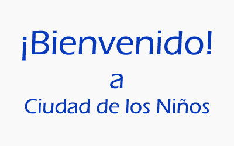
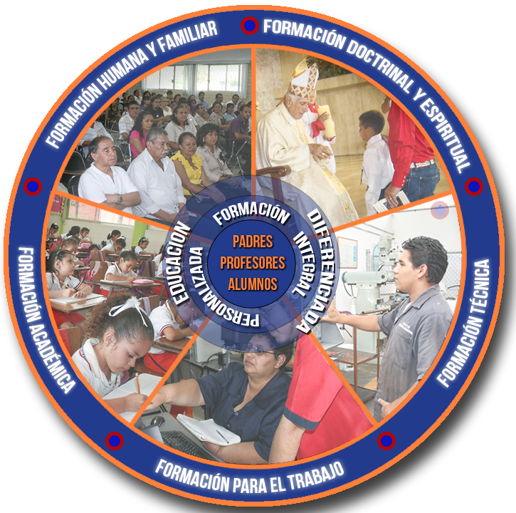

La Ciudad de los Niños de Monterrey, Asociación de Beneficencia Privada, es un centro educativo y
familiar dirigido a familias de recursos limitados, dedicado a la formación académica, técnica,
humana y espiritual de niños, niñas, jóvenes y padres de familia del área metropolitana de Monterrey.
Fue fundada el 20 de septiembre de 1951 por el Padre Carlos Álvarez Ortiz, con la ayuda de numerosos
empresarios y de la comunidad regiomontana en general, conscientes de la apremiante situación de los niños de la calle.
Si quieres conocer más información sobre esta Institución puedes visitar su Página Oficial
a la que puedes acceder por medio del siguiente enlace:
